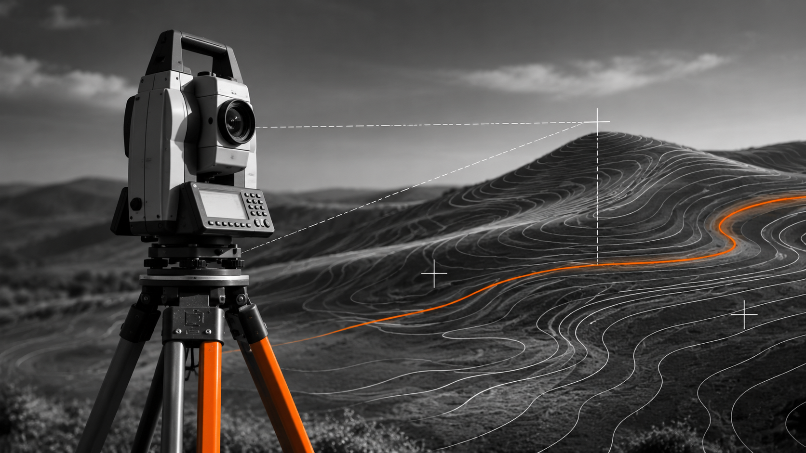
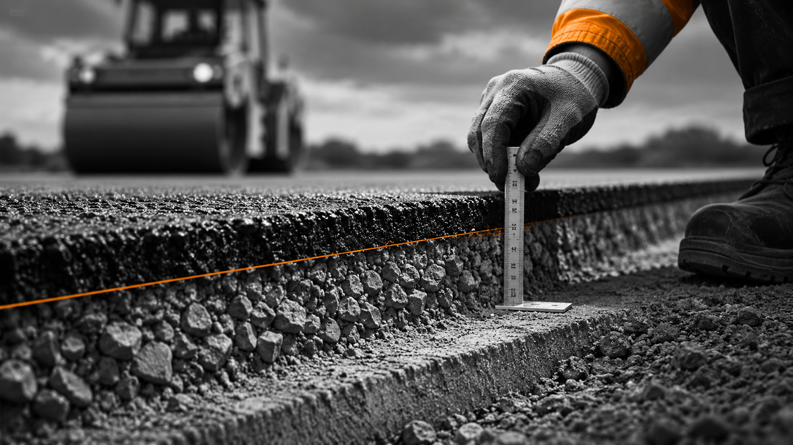

01 / INFRASTRUCTURE
Infrastructure & Project Delivery
Coordination of FTTH infrastructure construction, subcontractors, site operations and delivery processes across German projects.
Surveying, infrastructure and construction management. From technical precision to real-world delivery.
Explore projectsA multidisciplinary approach to engineering — connecting geospatial understanding, infrastructure delivery and technical quality.
Coordination of FTTH infrastructure construction, subcontractors, site operations and delivery processes across German projects.

Surveying-based technical thinking, as-built documentation, geospatial data and accurate engineering records.

Quality checks, surface reinstatement, technical coordination and acceptance preparation during construction delivery.
I am a Rural & Surveying Engineer educated at Aristotle University of Thessaloniki, working in German FTTH infrastructure construction since 2022. As a Bauleiter, I coordinate construction teams and subcontractors, interpret network plans, follow up technical documentation and quality issues, and prepare sections for acceptance. My surveying background helps me connect the details on site with the wider network and project requirements.
Based in Baden-Württemberg, Germany. Professional qualification recognised by the Baden-Württemberg Chamber of Engineers.
VIEW PORTFOLIO PDFThree real project challenges. Technical decisions, responsibilities and outcomes.
Several engineers and construction teams worked on different sections of the same FTTH rollout. Their activities were interdependent, but the section that was easiest to continue was not always the section most urgently needed for an upcoming municipal acceptance (Abnahme).
A direct agreement between two engineers could solve an immediate coordination issue, but it was not enough to set project-wide priorities. Project Managers and Area Managers were in contact with the municipalities and had a broader overview of deadlines, outstanding work and which sections needed to be handed over first. I therefore clarified priorities with the responsible managers and used that information to organise the sequence of work for my team. Day-to-day communication between engineers remained important, but it needed to follow the wider project priorities.
The experience taught me to look beyond the next task for my own crew and consider what the overall project needed for its upcoming acceptances. Clear responsibilities and communication through project management were central to coordinating interdependent work.
Our team took over specific FTTH construction sections in Heilbronn, while other parts of the network had been built by a contractor who had left the project. We were responsible for completing our own construction scope, not the former contractor’s work. Yet the fiber route to our distribution points had to pass through duct infrastructure built by both contractors. Construction boundaries and network connectivity were therefore two different things.
The challenge was not simply installing ducts or laying cable. During fiber blowing, a technician could identify the distance at which the fiber stopped, but that did not necessarily reveal how the planned route continued through the network. As Bauleiter, I needed to read the FTTH routing plans, follow the connections from the Point of Presence (PoP) to our distribution points and explain the intended path to the blowing team. That required understanding existing infrastructure outside our own construction sections and how it connected to the newly built network.
Fiber blowing through the interconnected duct infrastructure was successfully completed, enabling the planned connections to our distribution points. It showed why a Bauleiter needs both site-management skills and the ability to interpret the overall network layout.
Completing an FTTH construction section involves more than finishing the excavation and reinstating the surface. The work also has to be recorded accurately, outstanding quantities and reinstatement layers must be tracked, and technical documentation must be consistent with what was actually built. Supplementary works can make the final records especially difficult to reconcile.
I combined surveying and as-built documentation with practical construction checks. For supplementary works in Wintersdorf, I prepared topographic records and followed the documentation needed to close out the relevant distribution-point sections. I also compared excavation quantities against asphalt base and wearing-course entries to identify discrepancies or duplicate records. Where required, quality checks included reviewing compaction-test results and the condition of reinstated surfaces.
The value of this work was a clearer, traceable picture of completed work and remaining items for technical review and acceptance preparation. It illustrates how surveying, quantity verification and quality documentation support reliable FTTH project close-out.
FTTH construction management across multiple German projects, combining on-site delivery with technical coordination and documentation.
Bauleiter · FTTH Infrastructure
Heilbronn and Rastatt · FTTH construction coordination, subcontractor interfaces, reinstatement quality, documentation and acceptance preparation.
Bauleiter · Infrastructure Construction
Coordination of FTTH construction activities with technical and commercial responsibilities.
Bauleiter · FTTH Infrastructure
Rehlingen-Siersburg and Beckingen · Coordination of interdependent teams and acceptance-oriented work priorities.
Diploma in Rural & Surveying Engineering · 2021
Professional engineering qualification recognised in Baden-Württemberg.
Open to professional conversations about engineering, infrastructure and technical collaboration.
Detailed case study and approved project photography coming next.